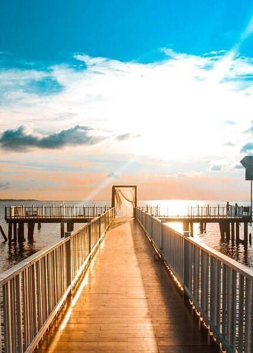

The Local Tales
where your journeys begin
The Local Tales |
|
where your journeys begin |
|  | Rach Gia pier is a tourist destination to take beautiful photos in Rach Gia every sunset. At sunset, the whole Rach Gia pier area is covered with a beautiful light yellow color.. If you walk on the bridges on the pier at this time, you will see a romantic and poetic seaside pier scene. If you are observant, you can also find yourself beautiful photos for your Rach Gia and Kien Giang travel photos. |